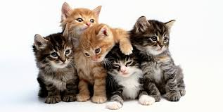

APPdeGatos
haz click aqui para ver mas imagenes de gatos
listas de gatos
cosas que los gatos aman :
- jugar pelotas
- dormir
tomar el sol- recibir caricias
cosas que los gatos odian
- otros gatos
- cambios en su rutina
- viajar en cocche
-
olores fuertes
parrafo 1 parrafo 2 parrafo 3 parrafo 4